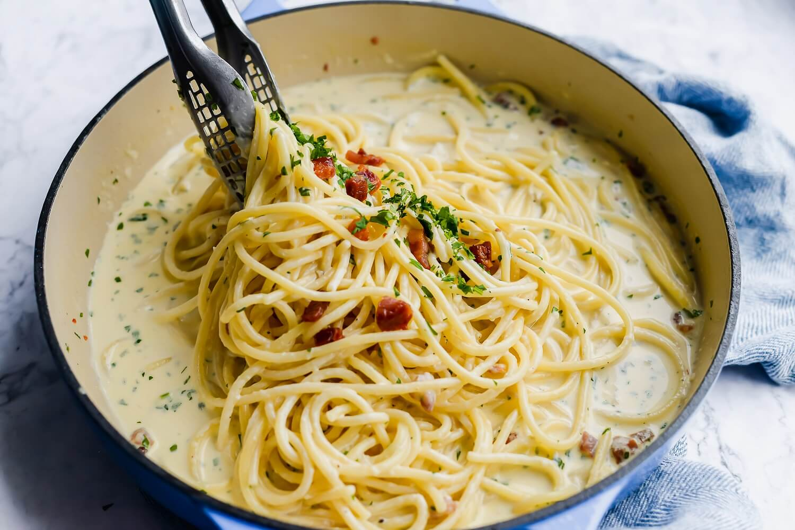

Pasta Carbonara

Description
If you want to serve something both easy and hearty, make spaghetti alla carbonara. Think of it as a pasta coated in a dressing made of eggs and cheese, with delectable bits of pork throughout. It’s a classic Italian meal that relies on pastas with a high surface-to-volume ratio so the eggs cook well on the noodles. This creamy carbonara recipe is ideal with spaghetti, fettuccine or linguine as a base—you can't go wrong.
Ingredients
- 1 teaspoon black pepper
- 2 egg yolk
- 2 tablespoons parsley
- 1 garlic clove
- 2 cups half and half
- 4 ounces pancetta
- 2 cups parmesan cheese
- 1 pinch red pepper flakes
- 12 ounces spaghetti
Steps
- Prepare spaghetti or similar noodles al dente. While the pasta cooks, add the pancetta to a large skillet over medium-low heat and sauté until crisp, about 8 minutes. Transfer the pancetta to a paper-towel-lined plate using a slotted spoon and set aside.
- Add the garlic to the pancetta drippings in the pan and sauté over medium heat for 1 minute.
- Add half and half to the skillet and bring to a simmer.
- Ladle about 2 tablespoons of the warm sauce into the egg yolks and stir briskly to temper them, then whisk the egg yolks into the sauce. Whisk in 1 1/2 cups of the Parmesan cheese. Stir in the black pepper and red pepper flakes.
- Add the cooked spaghetti, pancetta and parsley to the skillet and toss well to combine.
- Garnish with remaining Parmesan cheese and serve immediately.